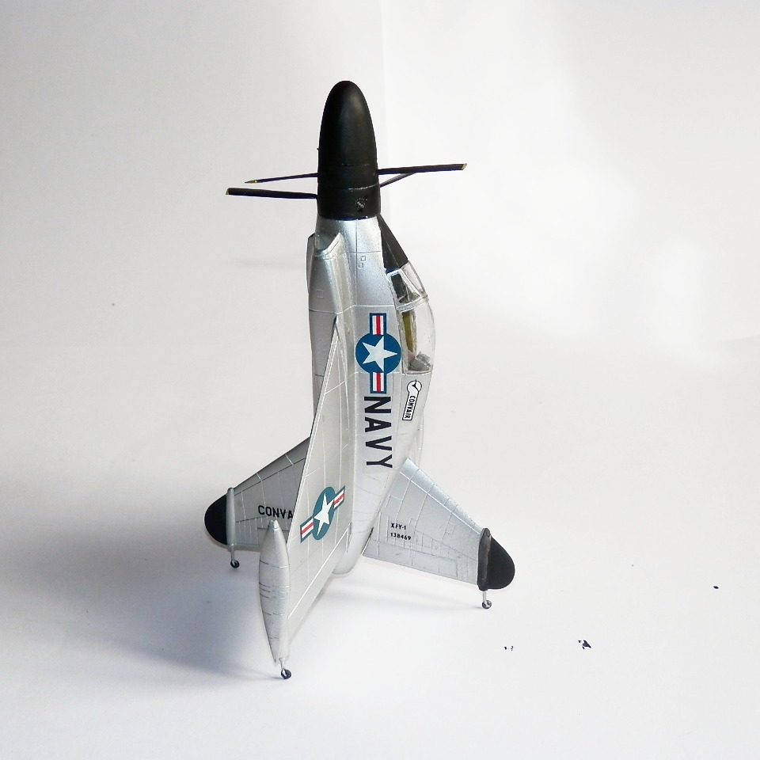
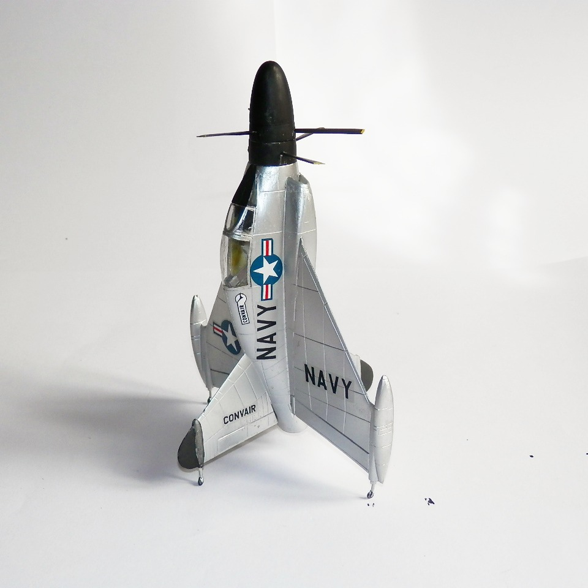
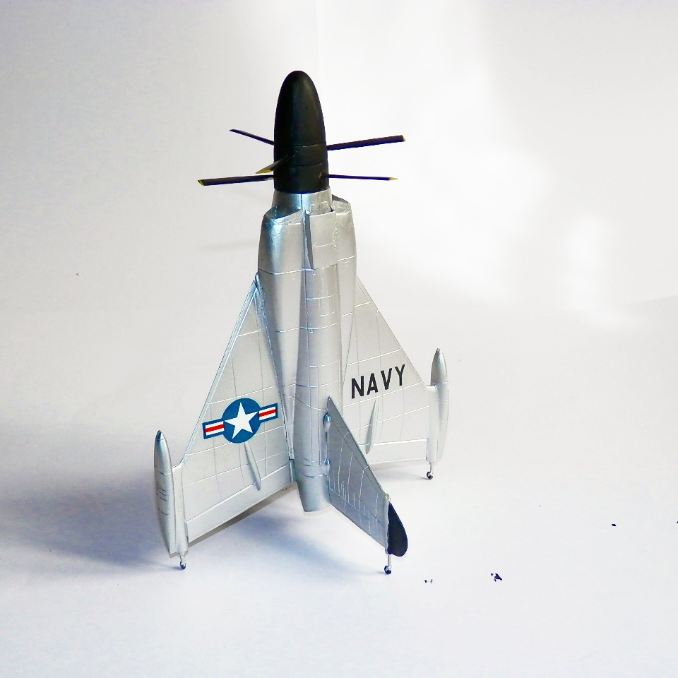

Aerei · scale model archive
Convair XFY-1 Pogo
Convair XFY-1 Pogo — Kit: KoPro, Scale: 1/72. Weird tail sitter turboprop fighter plane, first (tethered) flight on 19 April 1954. Very difficult to…

Photo gallery


English description
Weird tail sitter turboprop fighter plane, first (tethered) flight on 19 April 1954. Very difficult to land, it was clearly a dead-end from operability point of view but nevertheless an engineering feat by all means.
Descrizione italiana
Strano caccia turboelica tail-sitter, con primo volo, vincolato, il 19 aprile 1954. Molto difficile da far atterrare: dal punto di vista operativo era chiaramente un vicolo cieco, ma resta comunque una notevole impresa ingegneristica.